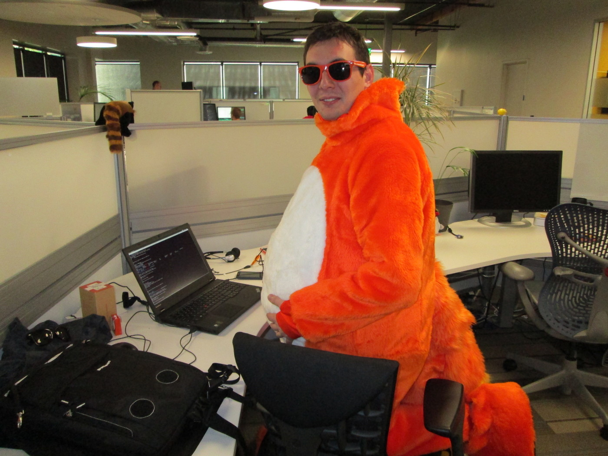
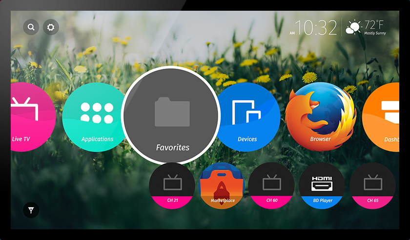

Mobiles et silos numériques
Théo CHEVALIER – Cryptoparty Toulouse
about:me
- Étudiant en Master MIAGE à Toulouse
- Contributeur Mozilla
Des silos ?
Write once, run everywhere

Vraiment partout.
Ce qui change pour l’utilisateur
- Marketplace n’est plus une obligation
- Essai d’une appli avant installation
- Plus besoin de racheter les applis
- Gestion des permissions au cas par cas
Et pour les développeurs
- Pas de langage/outil/techno à apprendre
- Rien à payer
- Besoin de la permission de personne
- Coûts extrêmement réduits
Merci !
Me contacter :
- Twitter : @t_chevalier
- theo@theochevalier.fr
- irc://irc.mozilla.org/frenchmoz